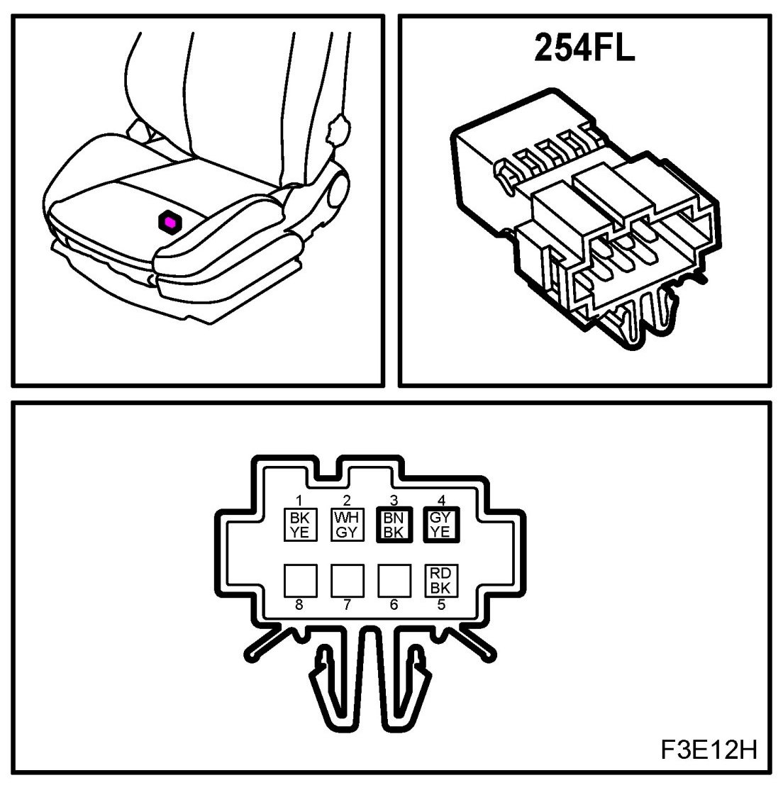
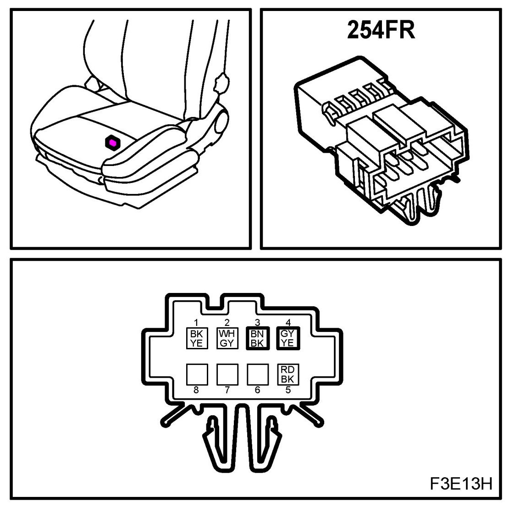

Operation CHARM
: Car repair manuals for everyone.
Home
>>
Saab
>>
2011
>>
9-3 FWD (9440) L4-2.0L Turbo
>>
Repair and Diagnosis
>>
Body and Frame
>>
Sensors and Switches - Body and Frame
>>
Seat Temperature Sensor
>>
Diagrams
Seat Temperature Sensor: Diagrams
Temperature Sensor, Seat Heating Pad (254)
Location: in the seat's seat cushion
FL

FR
